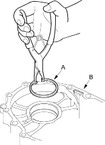
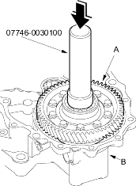
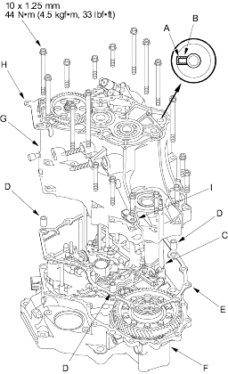

Driver 40 mm I.D., 07746-0030100
- Install the 80 mm set ring (A) in the transmission housing (B).

- Install the differential assembly (A) in the torque converter housing (B) using the special tool.

- Align the spring pin (A) on the control shaft with the transmission housing groove (B) by turning the control shaft (C).
NOTE: Be careful not to squeeze the end of the control shaft tips together when turning the shaft. If the tips are squeezed together it will cause a faulty signal or position due to the play between the control shaft and the switch.
- Install the three dowel pins (D) and the gasket (E) on the torque converter housing (F).

- Place the transmission housing (G) on the torque converter housing.
- Install the housing bolts along with the transmission hanger (H) and connector bracket (I). Tighten the bolts in two or more steps to 44 Nm (4.5 kgf/m, 33 lbf/ft) in a criss-cross pattern.